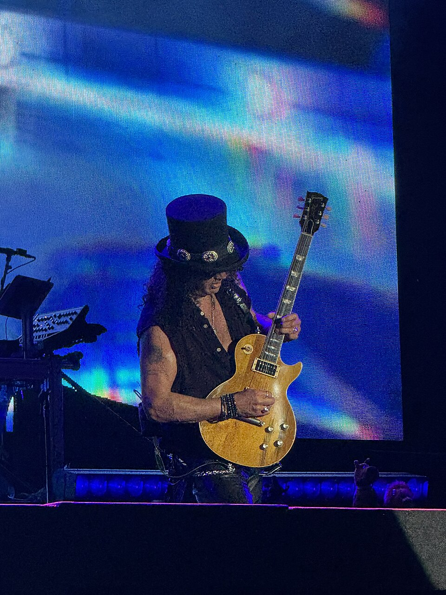
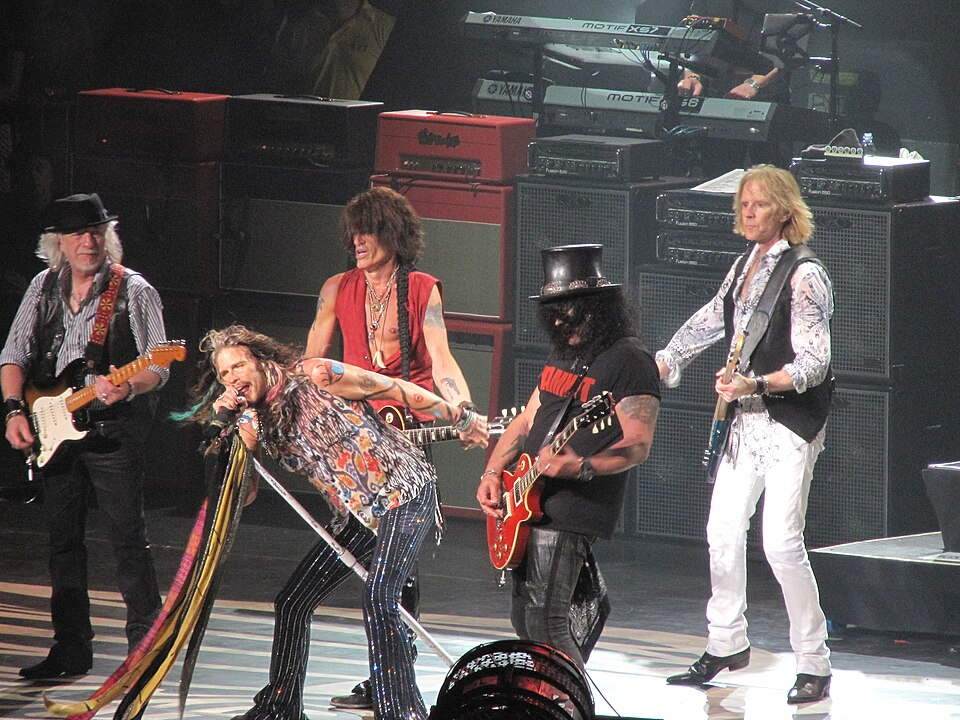

Welcome to Slash's Pit
Coming onto the scene rebellious and raw.
Rising to rock icon status.
Top hat and guitar in hand, he blazed a path across the globe one solo at a time.
Slash was born on July 23, 1965, in Hampstead, London, England. Born to two creative parents, his life started off just as unique as the guitar playing we have all come to know and love. His mother was a fashion designer, and his father was an English artist. During his early years, Slash was often surrounded by music. In many ways, this helped him discover his love for the guitar before he even picked one up. By the time he was five, he had his first exposure to Los Angeles, California, when his mother had to travel there for work. During these years, he would travel back and forth between his parents, but in 1974, they separated and eventually divorced. Soon after, Slash began acting out and getting into trouble as a kid. While his father remained present for a number of years during his childhood, Slash eventually moved to Los Angeles to live with his mother. While living there, he would often spend time at his grandmother’s house when his mother had to leave for work trips. It was during this time, when he was 15, that his grandmother bought him his first guitar.
Slash played and practiced with that guitar for many hours. He was self-taught, learning by playing his favorite records and dissecting each guitar part he heard. Besides his love of music, as a teenager Slash loved riding his BMX around Los Angeles. Through this hobby, he met his future bandmate Steven Adler. By the time he was 16, he had started forming bands with fellow teenage musicians. His first band often played instrumental covers because they didn't have a singer, and Slash refused to sing.

```htmlPhoto: AxeAdam20 / Wikimedia Commons — CC0 1.0
```In time, Slash joined up with Adler to form their own band. They needed a bassist, so they put out an ad, and that’s how they met Duff McKagan. Through various shows and lineup changes, Slash eventually met Axl Rose and Izzy Stradlin. With the core members together, they formed Guns N' Roses. Not long after coming together, they released their debut album, Appetite for Destruction, sharing their raw view of the world they lived in. For those 11 years together, they brought their often-unpredictable show to the masses. With their screeching vocals and gritty, old-school rock, they put on a show to remember.
Even after that ride ended, Slash wasn’t one to sit still. He quickly developed his own projects and continued working on music over the years. From collaborations with artists like Michael Jackson and Rihanna to co-founding the band Velvet Revolver, he continued finding new ways to create. He has also been credited with working on numerous soundtracks, as well as owning his own production company that produces horror films. Considering how he grew up, it’s amazing to see the outlet music has provided for him. With his top hat and Gibson in hand, he now plays wherever the notes take him.

Photo: bobnjeff / Wikimedia Commons — CC BY 2.0
Explore the stories behind the music. Discover the legends who reshaped our musical landscape.